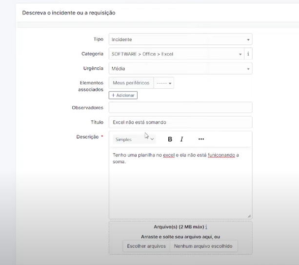

Telas, Computadores e Outros
O que são ativos?
Uma das principais abas do GLPI se chama Ativos, que é aonde estarão presentes praticamente tudo que compõe sua empresa ou local em que deseja organizar. De hardware a software e até mesmo outros itens relevantes a organização dentro do T.I. São exemplos de Ativos:
- Computadores
- Monitores
- Teclado
- Mouse
- Licença de Software
O registro de ativos dentro do GLPI serve uma função muito importante na hora de administrar os componentes de tecnologia da empresa e oferece um lugar compacto e seguro para inserir todos eles.
Etapa 1 - Adicionando Ativos
Agora que você já sabe o que são ativos, vamos aprender como inserir eles dentro do GLPI. O primeiro passo é escolher que tipo de ativo você deseja inserir dentro da lista de ativos disponíveis. Selecione a categoria e clique em Adicionar.
Etapa 2 - Configurando o Ativo
Após clicar para adicionar um novo ativo, será redirecionado a uma tela como essa. Aqui, poderá configurar exatamente como e aonde esse ativo será adicionado e como categorizá-lo. Vamos sublinhar algumas das opções principais.
- Nome: O nome que será dado ao ativo, esse nome aparecerá para todos que puderem visualizar ele.
- Localização: Aonde que o ativo está localizado. Pode ser o nome de uma empresa, grupo, departamento. Tudo depende de que maneira você deseja colocar. O + serve para adicionar novas localizações!
- Técnico Encarregado: Quem está "supervisionando" tal ativo. Serve para organizar internamente quem cuida de qual máquina/hardware/software.
- Usuário: Quem está utilizando tal ativo.
As configurações de ativos variam de tipo para tipo, mas todos seguem a mesma ideia: te ajudar a categorizar e organizar esses componentes da sua empresa.
Depois de adicionar, ele ficará adicionado na lista de ativos daquela categoria. É fácil e simples de achar e você pode organizar de maneira minuciosa ou mais simples dependendo do seu caso de uso. A lista aparece assim (podendo ser configurado também para mostrar mais ou menos ativos de uma vez só):
Etapa 3.1 - Chamadas
As chamadas também são uma parte crucial do GLPI e seguem regras similares a adição de ativos. Na aba de Assistência > Chamados, clique em adicionar e siga a tabela: 
- Tipo: Serve para indicar que tipo de ajuda está sendo requisitada.
- Categoria: Aonde que esse chamado se encaixa dentro dos componentes da empresa.
- Urgência: A prioridade da chamada.
- Elementos Associados: Coisas que fazem parte do chamado.
- Observadores: Você pode automaticamente assinalar alguém para lhe ajudar na chamada.
- Título: Título da chamada.
- Descrição: Descrição da chamada.
É possível também adicionar arquivos e imagens caso necessário. Depois disso, é só enviar e pronto! Seu chamado estará visível no sistema.
Aqui está um exemplo do meu GLPI:
Finalizando
E pronto! O seu ativo/chamada já está feito e inserido. Faça para cada ativo/chamada que desejar e utilize das diversas ferramentas de categorização para organizar da maneira que deseja.
Outras partes do GLPI funcionam de maneira similar - possuem um botão de adicionar que permite colocar as informações necessárias para adicionar no programa.
Extras
Adicionar Categoria
Algumas categorias permitem que você adicionem elas no momento da adição do ativo, sem necessidade de mover para outro menu para fazer o registro. Essas categorias terão um + ao seu lado e ao clicar abrirão uma tela que permitirá que você coloque as informações necessárias. No exemplo abaixo é como funciona a inserção de uma fabricante:
Após adicionar, ela fica disponível para ser usado como fabricante em outros ativos também. É bem prático e útil.